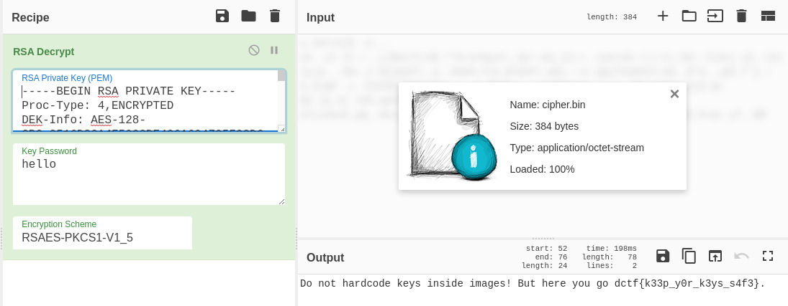

Forgotten Secret
Load image file docker load < image and checked the history. There were something interesting in history, cipher.bin, id_rsa, and a secret key.
$ docker history ctf-docker-image:latest --no-trunc
IMAGE CREATED CREATED BY SIZE COMMENT
sha256:7dabd7d32d701c6380d8e9f053d83d050569b063fbcf7ebc65e69404bed867a5 10 days ago /bin/sh -c #(nop) CMD ["cat" "/home/alice/cipher.bin"] 0B
<missing> 10 days ago /bin/sh -c #(nop) USER alice 0B
<missing> 10 days ago /bin/sh -c chmod 600 /home/alice/cipher.bin 384B
<missing> 10 days ago /bin/sh -c chown alice:alice /home/alice/cipher.bin 384B
<missing> 10 days ago /bin/sh -c #(nop) COPY file:74c685a989b7fe9e41bbc0b8bdebfd5a7fc9a1c64ac2afbf58a482f005eac558 in /home/alice/cipher.bin 384B
<missing> 10 days ago /bin/sh -c addgroup -S alice && adduser -S alice -G alice 4.67kB
<missing> 10 days ago /bin/sh -c #(nop) ENV SECRET_KEY=58703273357638792F423F4528482B4D6251655468566D597133743677397A24 0B
<missing> 10 days ago /bin/sh -c #(nop) ARG SECRET_KEY 0B
<missing> 10 days ago /bin/sh -c chmod 600 /root/.ssh/id_rsa 2.63kB
<missing> 10 days ago /bin/sh -c #(nop) COPY file:10b1d5253a9830ea19b3097c68c9d434b3f757225a404deb1c2fefb6ca5d49eb in /root/.ssh/id_rsa 2.63kB
<missing> 2 months ago /bin/sh -c #(nop) CMD ["/bin/sh"] 0B
<missing> 2 months ago /bin/sh -c #(nop) ADD file:0dbb1cd66f708f54f7e6663eabf24095fcd53747bfb09912a118a77e737d9617 in / 5.58MB Untar image to get all the layers, used grep to find the cipher.bin and extract the file from one of the layer included it. Extracted id_rsa in the same way.
$ grep cipher.bin . -R|grep Binary
Binary file ./image matches
Binary file ./98c9cc069e93e9cae98bbe8369566eda72b487e9ca60509e89d9d7ee98071f0d/layer.tar matches
Binary file ./b15241aee72134a1eda317850258161406ae470b813c26a1a244f7645b553014/layer.tar matches
Binary file ./df6e2b0dba838bcc158171c209ae2c7b8aeec4a8638a2fa981abda520233a170/layer.tar matchesid_rsa is a OPENSSH PRIVATE KEY, converted it to RSA PRIVATE KEY.
$ ssh-keygen -p -m PEM -f id_rsa
Enter old passphrase:
Key has comment 'root@kali'
Enter new passphrase (empty for no passphrase):
Enter same passphrase again:
Your identification has been saved with the new passphrase.Decrypted cipher.bin in CyberChef to find the flag. 